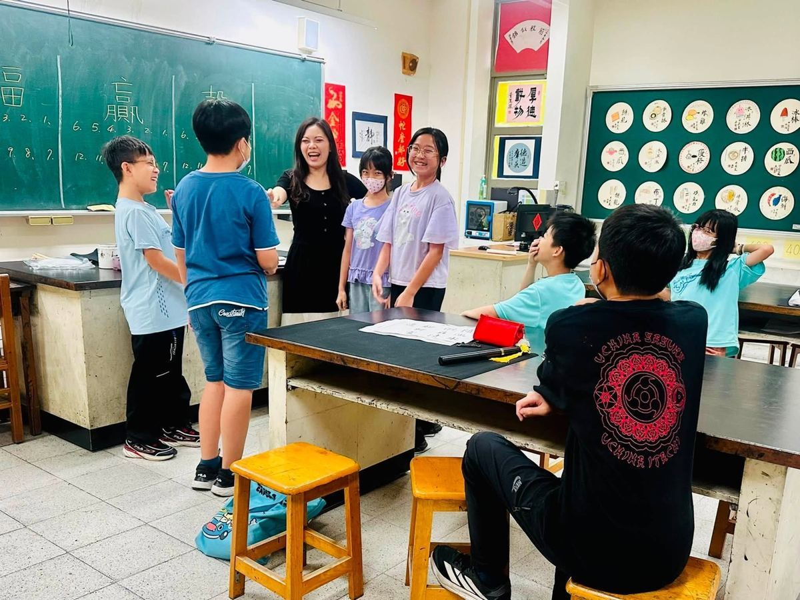
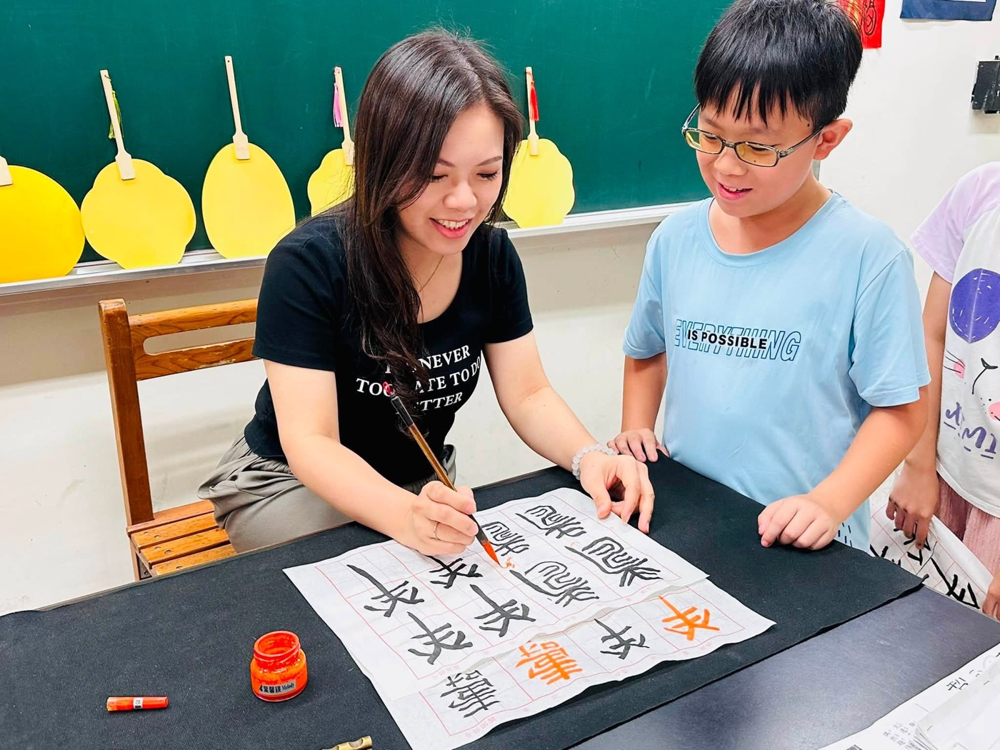
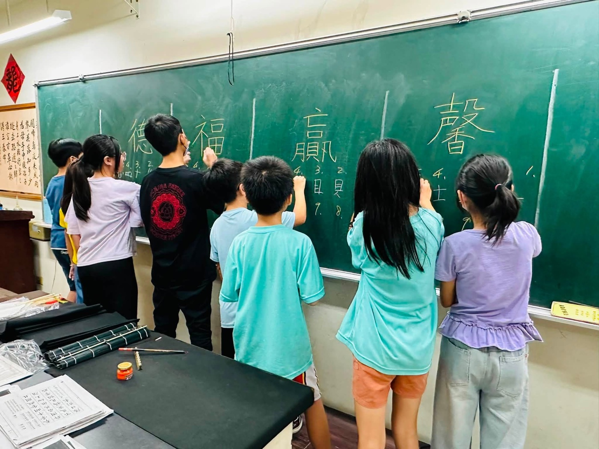
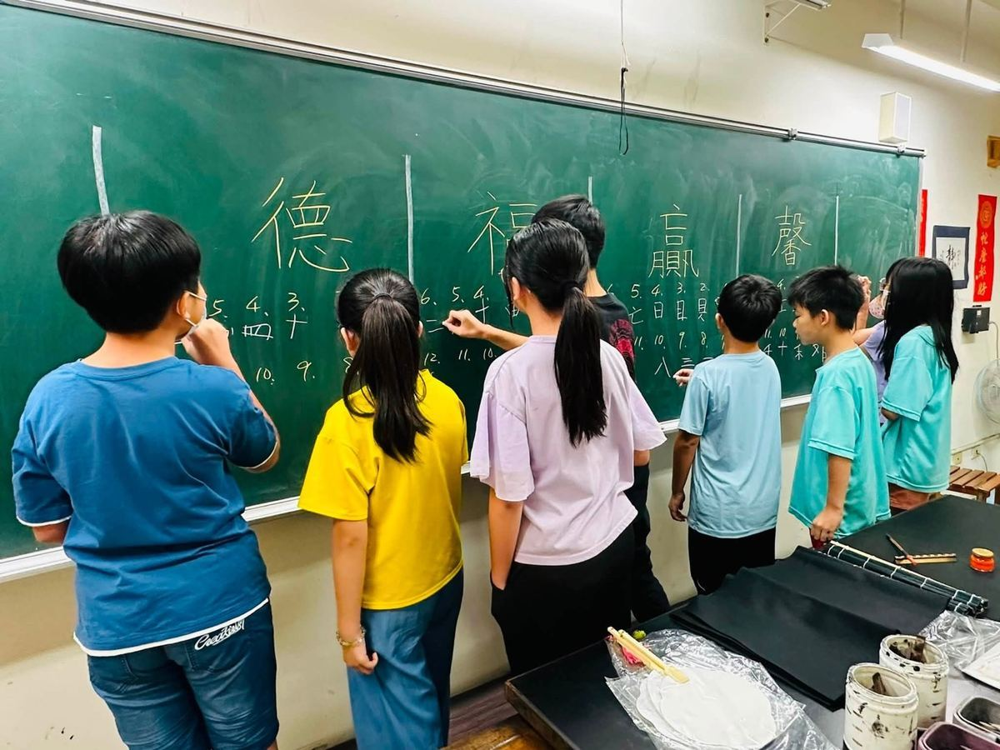
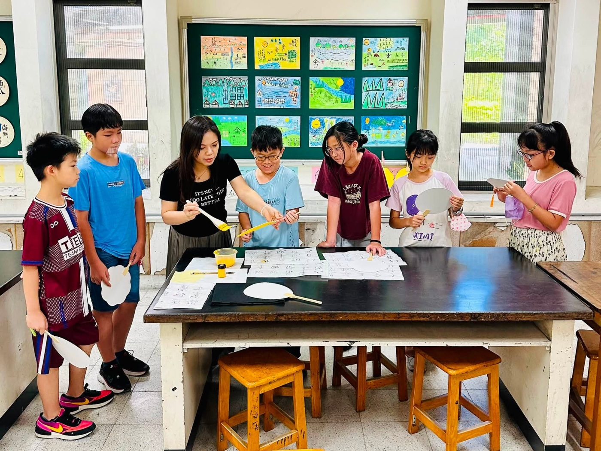

When a brush meets paper, and ink meets silence, something beautiful happens. This week, Hsinmin Elementary's Calligraphy Summer Camp drew to a wonderful close — five days of focused, creative, and deeply meaningful learning.
Under the caring guidance of Teacher Yeh Hsin-mei (葉馨鎂老師), students immersed themselves in the art of Chinese calligraphy — from how to hold and move the brush, to the structure and layout of each character. Every stroke, repeated again and again with patience and care, became a lesson in focus, beauty, and self-expression.





Here's what made this week truly special:
In just five days, students walked away with far more than finished artwork. They gained a patient spirit, a courageous willingness to create, and the deep satisfaction of completing something beautiful with their own hands. Thank you, Teacher Yeh, for this unforgettable week of ink and art. 🌸
【墨香盈校園・書藝伴成長】🍀
一週的書法營，畫下圓滿句點。
感謝葉馨鎂老師用心規劃每一堂課，帶領孩子們沉浸在書法藝術之中，從執筆、運筆到結構布局，一筆一畫反覆練習，在墨香中培養專注力、耐心與美感。
這一週，孩子們不僅完成了楷書唐詩作品，也首次挑戰篆書雙面扇創作，一面書寫自己的生肖，一面寫下最能代表自己的字，將書法與創意巧妙結合，完成一件件獨一無二的作品。
課程中更透過「拆字動動腦」活動，引導孩子探索漢字的結構與演變，在趣味互動中認識文字之美，感受中華文化的深厚底蘊。
短短五天，收穫的不只是作品，更是靜心學習的態度、勇於挑戰的精神，以及完成作品時滿滿的成就感。
✨感謝葉馨鎂老師的悉心指導，也謝謝每一位認真投入學習的孩子。願這份對書法的喜愛，陪伴大家在人生的每一段旅程中，寫下屬於自己的精彩篇章。
Words About Art & Chinese Calligraphy英語學習角 · 和藝術與書法有關的小單字
Six key words — tap 🔊 to listen, then try the conversation and quiz.
六個關鍵字，點 🔊 聽發音，再試試對話和小考。
情境：兩個同學聊起書法營的學習心得。